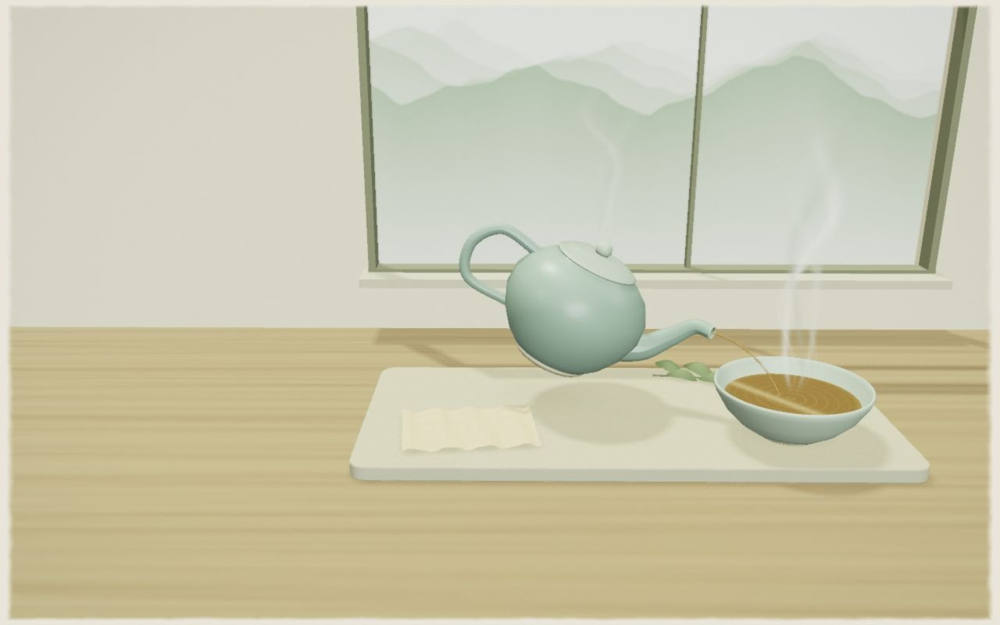
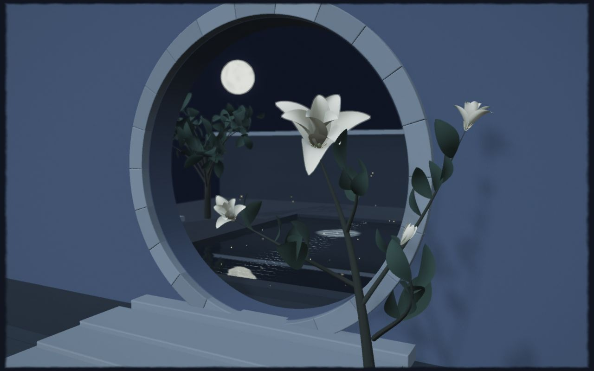
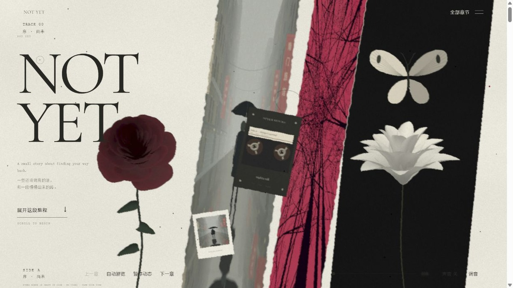

山间茶息
借远山安放留白，借蒸汽看见时间。把注意力从整片山水，慢慢收回一盏茶。
山岚 / 茶席 / 蒸汽进入这处风景
PAPER, LIGHT & A LITTLE TIME
先留十五秒，坐到窗边。
远村在雨里，灯火在水上，
一盏温茶，把这一刻留住。
原创 AI 氛围短片 · 约15秒 · 默认静音，可开启声音
 观看这段停留
观看这段停留
从原创首帧延展出的连续镜头。
让窗外的雨，与近处的茶烟一起流动。
01 / ENTER A SCENE
保留纸面的温度和画面的呼吸，改变主角、光线与动作。每个主题都可以独立进入，不必按顺序读完。

借远山安放留白，借蒸汽看见时间。把注意力从整片山水，慢慢收回一盏茶。

把明暗交给月色，把节奏交给花枝。在更轻的动作里，留意一朵花的变化。

02 / READ THE GRAMMAR
让体验成立的，是材料、留白、动作、文字和声音之间的关系。先理解这些关系，再决定下一幅画面要长成什么样。
一种可以带走的方法
空白决定视线在哪里停下。山间茶息把远山放轻，让茶席成为近处的重心；月下花庭则把暗处留出来，让花与月光彼此照应。
试一试：进入一个主题，先看静止时能否找到主角，再推进到下一幕。动作应当加强它，而不是替它制造存在感。
每幕只留一句值得停下来的话。文字与景物共享留白，不把画面变成说明书；语言可以换，分寸要留下。
03 / KEEP & CHANGE
延伸主题时，先分清哪些约定负责统一，哪些变化负责个性。这样，新的画面才不会只是给旧场景换一层颜色。
| 观察什么 | 始终保留 | 山间茶息 | 月下花庭 |
|---|---|---|---|
| 纸与色 | 有温度的底色、克制的颗粒、少量强调色 | 米白、青灰薄釉、茶褐 | 月蓝、灰白、花瓣的浅色 |
| 主角 | 一幕一个视觉重心，近远层次清楚 | 茶器在近处，山岚在远处 | 花枝在月光里，庭院退入暗处 |
| 变化 | 慢的持续动作，配合少量可触发的回应 | 蒸汽升起，水面和光线轻轻变化 | 花朵舒展，光点与枝叶缓缓移动 |
| 文字 | 短句、呼吸感，不堆满解释 | 安坐、温热、片刻的松弛 | 静观、等待、夜里的细小变化 |
| 声音方向 | 主动开启、音量克制，环境与旋律分层 | 让风、水与温暖的音色靠近 | 让夜色、空气与疏落的音符靠近 |
窄屏可左右滑动查看对照。表中描述的是主题的组织方式，不是对真实材质、自然声场或物理过程的完整模拟。
04 / MAKE ANOTHER SCENE
把这套方法带走时，先做一幅有感觉的画面，再把它延长成体验。
是茶的温热、月下的花，还是雨后的一小片光？先确定想让人停留的原因。
先让静态画面成立，再加入蒸汽、开合、倒影或风动。每种动作都应有清楚的作用。
看见场景、靠近主体、留下回响。用构图和细节推进，不让三幕只是同一画面的重复。
检查进入、切换、暂停和声音；再用窄屏看一遍，确认文字、主角和操作都找得到位置。